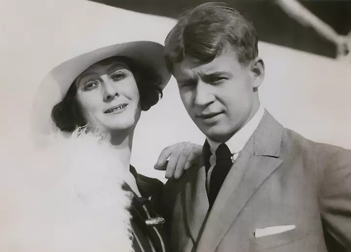

Сергей Есенин был влюбчивым и страстным человеком. Известно о его романах (подтверждены документально) с более чем тридцатью женщинами. В книге «Женщины, любившие Есенина» литературовед Борис Грибанов отмечает, что благодаря своей красоте поэт с юных лет вызывал интерес прекрасного пола. Женщины Сергея Есенина Жены и любовницы Есенина прощали ему и разгульный образ жизни, и измены, и безответственность. Шестеро из них сыграли особую роль в его жизни: Анна Изряднова стала первой гражданской женой поэта, когда тому было всего 18 лет. У них родился сын Юра. Сразу после его рождения Есенин оставил семью, но поддерживал общение с сыном до конца жизни. Анне Сергей посвятил поэзию «Гаснут красные крылья заката». В 1917 году Есенин познакомился с Зинаидой Райх (ей посвятил «Письмо к женщине») и заключил с ней официальный брак. У них было двое детей — Татьяна и Константин. После распада семьи их усыновил режиссер Мейерхольд. Живя в браке с Зинаидой Райх, Есенин завел роман с имажинисткой Надеждой Вольпин. Она родила ему внебрачного сына Александра. Он стал американским математиком, на любительском уровне писал стихи. Надежда Вольпин была единственной женщиной, которая сама писала Есенину стихотворные посвящения. Галина Бениславская была настолько страстной и влюбленной поклонницей поэта, что спустя год после его смерти застрелилась на могиле возлюбленного. Айседора Дункан. Об этом романе русского поэта и американской танцовщицы судачат до сих пор. Она не говорила по-русски, он не говорил по-английски, но они оба очень хорошо понимали язык творчества. За 2 года они побывали в США с гастролями, заключили брак, много раз ссорились и в результате развелись. Айседоре Дункан Есенин посвятил «Пой же, пой на проклятой гитаре». Софья Толстая — внучка Льва Толстого. С ней у поэта был последний серьезный роман. По ее настоянию Сергей лег на лечение в психоневрологию, откуда сбежал в печально известный отель «Англетер», где навсегда попрощался с жизнью. Поэт просит у нее прощенья в стихотворении «Кто я? Что я? Только лишь мечтатель».
У поэта была еще одна влюбленность — Шаганэ. Ей, армянской учительнице Шаганэ Тальян, он посвятил произведение «Шаганэ ты моя, Шаганэ». Девушка была высоконравственной, поэтому с Есениным их объединяла только дружба.